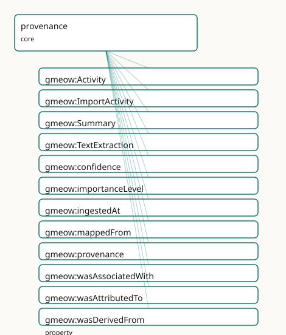

GMEOW Provenance Module
- IRI: https://blackcatinformatics.ca/gmeow/slices/provenance
- Tier: core
Group: core
What This Slice Covers
This slice owns 13 terms and contributes 25 mapping or projection rows. Use it when its terms match the native fact you want to preserve; use the linkage tables to see how those facts leave GMEOW for consumer vocabularies.
Dependencies
Consumers
- Every attributed fact (P9): statement-layer attribution, import activities, GTS chain-of-custody.
Local Map

Examples
Import Lineage
- Source:
slices/core/provenance/examples/import-lineage.ttl - GMEOW terms:
gmeow:CreativeWork,gmeow:ImportActivity,gmeow:SoftwareAgent,gmeow:Summary,gmeow:confidence,gmeow:contentDigest,gmeow:ingestedAt,gmeow:name,gmeow:sourceLocation,gmeow:sourceModifiedAt - External prefixes:
xsd
# SPDX-FileCopyrightText: 2026 Blackcat Informatics® Inc. <paudley@blackcatinformatics.ca>
# SPDX-License-Identifier: CC-BY-4.0
#
# Worked example: ingest lineage on the PROV triad . A machine-generated
# summary records WHERE it came from (gmeow:wasDerivedFrom → the source), HOW it
# was produced (gmeow:wasGeneratedBy → an Activity), and WHO ran it
# (gmeow:wasAttributedTo → an Agent). The importer is a gmeow:SoftwareAgent that
# self-records its own run — the producer of the provenance is inside it.
# (How much to trust the derivation is gmeow:confidence — an annotation on the
# derivation STATEMENT, carried in the RDF-1.2 statement layer rather than as an
# A-box property on the individual, so it is out of scope for this flat example.)
@prefix gmeow: <https://blackcatinformatics.ca/gmeow/> .
@prefix ex: <https://blackcatinformatics.ca/gmeow/examples/provenance/> .
@prefix xsd: <http://www.w3.org/2001/XMLSchema#> .
# --- The source: an imported work, pinned by location + content digest.
ex:sourcePaper a gmeow:CreativeWork ;
gmeow:sourceLocation "/imports/papers/smith-2020-erosion.pdf" ;
gmeow:sourceModifiedAt "2020-07-11T00:00:00Z"^^xsd:dateTime ;
gmeow:contentDigest "blake3:9f86d081884c7d659a2feaa0c55ad015a3bf4f1b2b0b822cd15d6c15b0f00a08" .
# --- The activity and the agent that performed it (the importer self-records).
ex:import a gmeow:ImportActivity ;
gmeow:ingestedAt "2026-06-14T09:30:00Z"^^xsd:dateTime ;
gmeow:wasAssociatedWith ex:importer .
ex:importer a gmeow:SoftwareAgent ;
gmeow:name "gmeow PDF summariser"@en .
# --- The derived artefact: WHERE from, HOW made, and WHO by.
ex:abstract a gmeow:Summary ;
gmeow:wasDerivedFrom ex:sourcePaper ;
gmeow:wasGeneratedBy ex:import ;
gmeow:wasAttributedTo ex:importer .
Terms
Classes
| Term | Label | Definition |
|---|---|---|
gmeow:Activity |
Activity | Something that occurs over a period of time and acts upon or with entities — creating, transforming, using, or attributing them. |
gmeow:ImportActivity |
Import Activity | An activity that ingested an external source artifact (an import envelope such as a vCard file) and recorded the claims it carried. Carries the ingestion (tran... |
gmeow:Summary |
Summary | A condensed account derived from a source information object (often machine-generated), linked to its source by gmeow:wasDerivedFrom. |
gmeow:TextExtraction |
Text Extraction | The text content extracted from a source object (e.g. a PDF attachment), linked to its source by gmeow:wasDerivedFrom. |
Properties
| Term | Label | Definition |
|---|---|---|
gmeow:confidence |
confidence | Confidence in a claim, in the closed interval [0,1], attached to the statement it qualifies. |
gmeow:importanceLevel |
importance level | Relative import/source importance of a claim on a 0–10 scale; projection takes the maximum across imports. |
gmeow:ingestedAt |
ingested at | When an import activity recorded its claims into the system — the transaction time. Distinct from gmeow:assertedAt (observation) and gmeow:validFrom/validUntil... |
gmeow:mappedFrom |
mapped from | The source property a claim was derived from during ingestion, recorded for mapping-step audit. |
gmeow:provenance |
provenance | A statement of any changes in ownership and custody of a resource since its creation that are significant for its authenticity, integrity, and interpretation. |
gmeow:wasAssociatedWith |
was associated with | Relates an activity to an agent associated with carrying it out — e.g. the software agent that ran an import. (Activity→Agent; the counterpart of gmeow:wasAttr... |
gmeow:wasAttributedTo |
was attributed to | Ascribes responsibility for an entity to an agent. |
gmeow:wasDerivedFrom |
was derived from | Relates a derived thing to the thing it was derived from — e.g. a text extraction, summary, or embedding to its source; a commit to its parent commit; a trajec... |
gmeow:wasGeneratedBy |
was generated by | Relates an entity to the activity that produced it. |
Linkages
- Rows: 25
- Projection profiles:
dcat,dcterms,oai_dc,web-annotation - External vocabularies:
dc,dcterms,oa,prov,rdf,wd
| Source | Kind | Profile | Predicate/Relation | Target | Evidence |
|---|---|---|---|---|---|
gmeow:Activity |
equivalence | - |
owl:equivalentClass | prov:Activity | gmeow-classes.sssom.tsv; gmeow:eqClasses045; confidence 1 |
gmeow:Activity |
equivalence | - |
skos:closeMatch | prov:Activity | gmeow-provenance.sssom.tsv; gmeow:eqProvenance001; confidence 0.9 |
gmeow:Activity |
equivalence | - |
skos:closeMatch | wd:Q1914636 | gmeow-wikidata.sssom.tsv; gmeow:eqWikidata055; confidence 0.75 |
gmeow:ImportActivity |
equivalence | - |
skos:closeMatch | prov:Activity | gmeow-provenance.sssom.tsv; gmeow:eqProvenance007; confidence 0.8 |
gmeow:ingestedAt |
equivalence | - |
skos:closeMatch | prov:endedAtTime | gmeow-provenance.sssom.tsv; gmeow:eqProvenance008; confidence 0.85 |
gmeow:provenance |
equivalence | - |
skos:closeMatch | dcterms:provenance | gmeow-dublin-core.sssom.tsv; gmeow:eqDcTerms030; confidence 0.75 |
gmeow:wasAssociatedWith |
equivalence | - |
skos:closeMatch | prov:wasAssociatedWith | gmeow-provenance.sssom.tsv; gmeow:eqProvenance005; confidence 0.9 |
gmeow:wasAttributedTo |
equivalence | - |
skos:exactMatch | prov:wasAttributedTo | gmeow-attestation.sssom.tsv; gmeow:eqAttestation007; confidence 0.95 |
gmeow:wasAttributedTo |
equivalence | - |
owl:equivalentProperty | prov:wasAttributedTo | gmeow-properties.sssom.tsv; gmeow:eqProperties034; confidence 1 |
gmeow:wasAttributedTo |
equivalence | - |
skos:closeMatch | prov:wasAttributedTo | gmeow-provenance.sssom.tsv; gmeow:eqProvenance004; confidence 0.9 |
gmeow:wasDerivedFrom |
equivalence | - |
skos:exactMatch | prov:wasDerivedFrom | gmeow-attestation.sssom.tsv; gmeow:eqAttestation006; confidence 0.95 |
gmeow:wasDerivedFrom |
equivalence | - |
skos:closeMatch | prov:wasDerivedFrom | gmeow-provenance.sssom.tsv; gmeow:eqProvenance002; confidence 0.9 |
gmeow:wasDerivedFrom |
equivalence | - |
owl:equivalentProperty | prov:wasDerivedFrom | gmeow-provenance.sssom.tsv; gmeow:eqProvenance014; confidence 1 |
gmeow:wasGeneratedBy |
equivalence | - |
skos:exactMatch | prov:wasGeneratedBy | gmeow-attestation.sssom.tsv; gmeow:eqAttestation005; confidence 0.95 |
gmeow:wasGeneratedBy |
equivalence | - |
owl:equivalentProperty | prov:wasGeneratedBy | gmeow-properties.sssom.tsv; gmeow:eqProperties035; confidence 1 |
gmeow:wasGeneratedBy |
equivalence | - |
skos:closeMatch | prov:wasGeneratedBy | gmeow-provenance.sssom.tsv; gmeow:eqProvenance003; confidence 0.9 |
gmeow:ImportActivity |
projection | dcat |
projects to / <= | prov:Activity, prov:endedAtTime, rdf:type | gmeow:mapDcatImportActivity; confidence 0.9; lossy: transaction time flattens to prov:endedAtTime; the assertion/validity clocks are dropped |
gmeow:ingestedAt |
projection | dcat |
projects to / <= | prov:Activity, prov:endedAtTime, rdf:type | gmeow:mapDcatImportActivity; confidence 0.9; lossy: transaction time flattens to prov:endedAtTime; the assertion/validity clocks are dropped |
gmeow:provenance |
projection | dcterms |
projects to / = | dcterms:provenance | gmeow:mapDctermsProvenance; confidence 0.75 |
gmeow:provenance |
projection | oai_dc |
projects to / <= | dc:source | gmeow:mapOaiDcProvenance; confidence 0.5; lossy: provenance falls to dc:source in the 15-element dumb-down |
gmeow:wasAssociatedWith |
projection | oai_dc |
projects to / <= | dc:publisher | gmeow:mapOaiDcPublisher; confidence 0.5; lossy: GMEOW has no flat publisher property; the projection traverses wasGeneratedBy→wasAssociatedWith and is lossy |
gmeow:wasAttributedTo |
projection | dcat |
projects to / = | prov:wasAttributedTo | gmeow:mapDcatWasAttributedTo; confidence 0.95 |
gmeow:wasAttributedTo |
projection | web-annotation |
projects to / <= | oa:Annotation, oa:hasBody, oa:hasTarget, oa:motivatedBy, oa:tagging, rdf:type | gmeow:mapWebAnnotationTagging; confidence 0.8; lossy: confidence, temporal scope (taggingInterval), scheme dropped; tagger and attribution omitted (not projected); transform gmeow:fnTaggingToAnnotation |
gmeow:wasGeneratedBy |
projection | dcat |
projects to / = | prov:wasGeneratedBy | gmeow:mapDcatWasGeneratedBy; confidence 0.95 |
| ... | ... | ... | ... | ... | 1 more rows |
Guide
Provenance — activities, attribution, and the statement clocks' epistemic siblings
Slice:
https://blackcatinformatics.ca/gmeow/slices/provenance· tier: core The PROV-O superset layer: who made it, what produced it, and how sure we are — on every statement in every slice.
A claim without provenance is the failure mode this ontology was written against
(Principle 14: an LLM output is a claim, not a truth). This slice supplies the two halves
of the answer. The individual half is a compact PROV-O-aligned activity model
(Principle 5): activities that generate entities, agents that are attributed or
associated, derivation chains from source to extraction to summary. The statement half
is a set of cross-cutting annotation properties (confidence, importanceLevel,
mappedFrom) that ride on the RDF-1.2 reified-statement layer (Principles 2–3), so any
fact in any slice carries its epistemic weight without a single new relator.
On the claim spine (Source → Chunk → EvidenceSpan → Claim, Principle 14) this slice is the
chain of custody: the ImportActivity that ingested the Source, the wasDerivedFrom
chain from Source to Chunk to extraction, and the confidence annotation on the final
Claim. The three epistemic axes never bridge (Principle 9): gmeow:accordingTo says whose
frame holds a claim, the wasDerivedFrom chain back through its ImportActivity says
which source recorded it, and gmeow:confidence says how sure we are — a neutral archive
can record a partisan claim, and a claim can be high-confidence yet from a frame we
dispute. (gmeow:wasAttributedTo plays a different role entirely: it ascribes
responsibility for an entity to an agent — see below.)
Activities
gmeow:Activity
Something that occurs over time and acts upon entities — creating, transforming, using,
attributing. A gufo:EventType under gmeow:Event, so the temporal slice's clocks and
the events slice's participation machinery apply unchanged (Principle 4: one canonical
event model).
gmeow:ImportActivity
The ingestion act: an activity that consumed an external envelope (a vCard file, a mail
archive, a GTS package) and recorded the claims it carried. Carries gmeow:ingestedAt —
the transaction clock: when the system learned the claims, held strictly apart from
assertedAt (when someone claimed them) and validFrom/validUntil (when they hold).
Three clocks, never collapsed.
gmeow:wasGeneratedBy
Entity → Activity: the activity that produced an entity. The provenance leg every derived
artifact (extraction, summary, embedding, reasoned graph) must carry; pairs with
gmeow:observationEvent in the observations slice, which gives the event perspective
(when) rather than the generation perspective (by what process).
gmeow:wasAttributedTo · gmeow:wasAssociatedWith
The two attribution directions: wasAttributedTo ascribes an endurant Entity to a
responsible Agent; wasAssociatedWith relates an Activity to the agent carrying it out
(e.g. the software agent that ran an import). Keep them straight — attributing the
output and crewing the process are different facts.
gmeow:wasDerivedFrom
The derivation backbone, deliberately domain-free so events, endurants, and information
objects all participate: a TextExtraction from its PDF, a Summary from its source, an
embedding from its chunk, a commit from its parent, a trajectory from its sample stream.
Confidence and generating agent ride alongside via gmeow:confidence and
gmeow:wasGeneratedBy — a derivation is itself a claim about lineage.
gmeow:Summary · gmeow:TextExtraction
The two canonical derived information objects: a condensed (often machine-generated)
account, and the text content pulled from a source artifact. Both link back with
wasDerivedFrom; both are claims about their source, not replacements for it — the
source stays, suppression never erasure (Principle 10).
The statement-level annotations
gmeow:confidence
Epistemic confidence in a claim, in [0,1], attached to the statement it qualifies. An annotation property so the OWL downcast stays DL-clean (Principle 3). Confidence is orthogonal to standpoint and to source (the three-axis doctrine) — it answers "how sure", never "who says" or "who recorded".
gmeow:importanceLevel · gmeow:mappedFrom
The remaining statement-level audit pair: relative importance on a 0–10 scale (projection takes the maximum across imports — a solver-layer fold, Principle 12), and the source property a claim was mapped from during ingestion, recorded so every mapping step is auditable end to end (Principle 7: verified by construction).
gmeow:provenance
The Dublin Core custody statement (a free-text account of ownership and custody changes significant for authenticity and interpretation. The human-readable complement to the structured activity chain, not a substitute for it.
Solver boundary & alignment
Trust-weighted aggregation, confidence combination across sources, and transitive
derivation closure are computations, never assertions (Principle 12): the slice records
the inputs (activities, attributions, per-statement confidence); ranking and fusing them
is projection policy. Aligned by reference to PROV-O (prov:Activity,
prov:wasGeneratedBy, prov:wasAttributedTo, prov:wasAssociatedWith,
prov:wasDerivedFrom) — GMEOW's superset adds the statement-level annotation axis and
the transaction clock.
Dependencies
Depends on kernel, documents, and events. Consumed by every attributed fact in the
graph: the statement-layer attribution axes, import pipelines, and the GTS package
chain-of-custody (Principle 14).